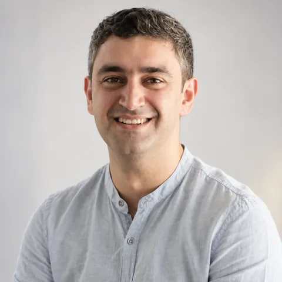
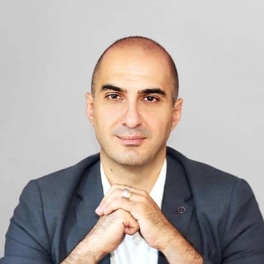
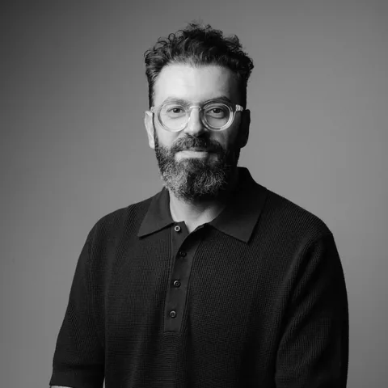

AI քեզ Project Manager · «AI քեզ բան» × M.A.M
Գալիս ես գաղափարով, վերադառնում՝ AI-ով ուժեղացված նախագծով
Այս դասընթացը նախագծերի կառավարման հիմունքներ չի սովորեցնում։ Այն գործող PM-ների հմտությունների ուժեղացման ծրագիր է՝ ինչպես արագացնել և բարելավել արդեն ծանոթ աշխատահոսքերը AI-ի օգնությամբ։
Գրանցվել դասընթացին Տեսնել ծրագիրը- Կառուցվածք
- 3 մոդուլ · 8 դաս · 1 նախագիծ · 1 Demo Day
- Տևողություն
- 4 շաբաթ + Demo Day
- Ձևաչափ
- Օնլայն · Zoom
- Օրեր
- Չորեքշաբթի և ուրբաթ · 19:00–21:00
- Մեկնարկ
- Նոյեմբերի 4
- Ռեսուրսներ
- Տեսաձայնագրություններ, սահիկաշարեր, SOP ձևանմուշներ, AI գործիքների թարմացվող ցանկ
- Արժեք
- 47,000 ֏
PM աշխատանքի աուդիտ
Խնդրի ուսումնասիրություն և որոշում
Փաստաթղթեր, պլան, AI միջավայր
Չափանիշներ և ռիսկեր
Ավտոմատացում, գործակալ, ներկայացում
8 դաս՝ քո իրական նախագծի շուրջ
Յուրաքանչյուր դաս 2 ժամ է՝ 10-րոպեանոց դադարով և չորս 5-րոպեանոց հարցուպատասխանով։ Գործիքները ցուցադրվում են ուղիղ եթերում, իսկ ամեն դասից հետո տրվում է չգնահատվող Soft Lab՝ սեփական նախագծի վրա։
Նախապատրաստում՝ նոր դեր, նոր մտածողություն և AI աշխատանքային միջավայր
AI շրջադարձը. ինչո՞ւ պիտի 21-րդ դարի PM-ն այլ կերպ աշխատի
PM-ի փոփոխվող դերը · AI հիմունքներ՝ մոդել, գործիք, ավտոմատացում, գործակալ · գործընթացների աուդիտ · սահմաններ և էթիկա
Քո AI աշխատանքային միջավայրը՝ կոնտեքստ և կապեր
Project Context Pack · հրահանգներ, հիշողություն, երկար կոնտեքստ · ChatGPT Work և Claude Cowork · MCP կապակցումներ · GTD ամփոփագրեր
Գաղափարից մինչև նախագիծ՝ AI-ի օգնությամբ
AI գործակալներ, ավտոմատացումներ և քո AI PM աշխատանքային համակարգը
Ե՞րբ ավտոմատացում, ե՞րբ գործակալ · աշխատահոսքի քարտեզ · մարդկային հաստատում, գրանցում, խափանումներ · SOP գրադարան
Նախագիծը սկսվում է խնդրից. հետազոտություն, հետադարձ կապ և որոշում
Opportunity Solution Tree · խորը հետազոտություն · հարցազրույցների համադրում · որոշման կանոններ
AI-ով աշխատող նախագծային փաստաթղթեր՝ համառոտ նկարագրից դեպի իրատեսական պլան
Մեկ պարբերությունից՝ brief, one-pager, պահանջներ · շրջանակ, փուլեր, բյուջե · կապակցված փաստաթղթեր և փոփոխությունների գրանցամատյան
Նախագծի առողջությունը. ռիսկերից ու տվյալներից՝ նոր որոշումներ
Ի՞նչ չափել · ռիսկերի կառավարում · Sheets/Excel վերլուծություն · սցենարներ · կարմիր/դեղին/կանաչ կարգավիճակ
Թիմի առաջնորդում, նախագծի իրականացում և ներկայացում
Մարդիկ են շարժում նախագծերը. ազդեցություն առանց պաշտոնական իշխանության
Շահակիցների քարտեզ · թիմում AI-ի ընդունում · հանդիպումից դեպի որոշումներ · դժվար խոսակցություններ և բանակցություններ
Փորձագետների մաստերքլաս. հաջողված ու ձախողված նախագծեր
Դեպքերի ուսումնասիրություն · հաջողության չափանիշներ · վերականգնում ձախողումից · ներկայացման տրամաբանություն
8 դասից հետո կարողանում ես՝
- հասկանալ PM-ի փոփոխվող դերը և AI-ի պատասխանատու կիրառման սահմանները
- ստեղծել նախագծի կոնտեքստը հասկացող AI աշխատանքային միջավայր
- ուսումնասիրել իրական խնդիրը և որոշում կայացնել հետազոտության հիման վրա
- ստեղծել ու կառավարել փոփոխություններին հարմարվող նախագծային փաստաթղթեր
- տվյալներից ու ռիսկերից տեսնել նախագծի իրական վիճակն ու հիմնավորել հաջորդ քայլը
- ավտոմատացնել կրկնվող գործընթացները և կառուցել վերահսկվող AI գործակալ
- առաջնորդել թիմն ու շահակիցներին՝ առանց պաշտոնական իշխանության
- հստակ ու համոզիչ կերպով ներկայացնել նախագիծը
Demo Day · 2 ժամ · բաց է բոլոր մասնակիցների համար
Լավագույն 5 նախագիծը՝ ուղիղ եթերում, մեկ հաղթող
- Ուղարկում ես նախագծի փաթեթը՝ կարճ ներկայացում, նյութերի հղում և AI-ի կիրառման նկարագրություն։
- AI ագենտն ու ուսուցիչները գնահատում են բոլոր նախագծերը և ընտրում լավագույն 5-ը։
- 5 մասնակից Demo Day-ին կենդանի ներկայացնում են նախագծերը։
- Փորձագիտական հետադարձ կապ և վերջնական գնահատմամբ՝ մեկ հաղթող։
- Բոլոր հայտ ներկայացրածները ստանում են կառուցվածքային հետադարձ կապ։
Գնահատման չափանիշներ
Ուսուցիչներ
Անժելա Պեդանյան
Engineering Manager / Technical Project Manager / AI դասավանդող- 6+ տարվա փորձ PM-ի և ինժեներական թիմի ղեկավարի դերերում
- ֆինտեխ համակարգերի և վճարային ենթակառուցվածքի բարդ նախագծեր
- 20–30 հոգանոց բազմաֆունկցիոնալ թիմերի ղեկավարում

Արտակ Գրիգորյան
AI դասավանդող / AI-ով ուժեղացված պրոդուկտի կառավարող / CPO- 15,000+ սովորող և 200+ ժամ AI դասընթացներ
- AI-ի ինտեգրում պրոդուկտի ամբողջ կյանքի ցիկլում
- prompt engineering, ավտոմատացումներ և AI գործակալներ

Ռեմ ԴարբինյանAI փորձագետ, SmartClick-ի համահիմնադիր · Դաս 1
Սերգեյ ԹանթուշյանԲիզնես հաղորդակցության դասախոս, AUA · Դաս 7